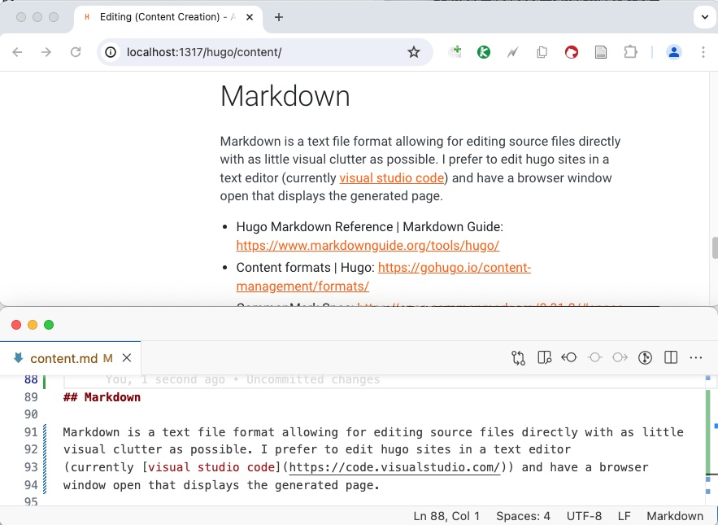

Editing (Content Creation)
Content Creation in Hugo is done by editing markdown files. The site’s structure is defined in templates, which are also plain text files. Both are usually put under version control and edited with the same tools used in software development.
flowchart LR
content[/"Site Content (Markdown)"/]
structure[/"Site Structure (HTML, CSS, JS)"/]
hugo["`
**HUGO**
⚙️ `"]
website[/"Complete Website with Content
(HTML, CSS, JS)"/]
content & structure --> hugo
hugo --> website
Editing Overview
Have a look at the hugo site examples section. The hugo-bare-bones/ example is a good starting point to explore Hugo’s file structure. Basically, the generated site mirrors the structure in the content folder.
You can add new pages by either
- calling hugo new (e.g
hugo new content posts/second-post.md) which copies a template from /archetypes, or by - creating a new markdown file and adding the front matter (page settings at the top of the file) manually (e.g. by copying and modifying it from another file).
Local build
While editing your page, you can have hugo build and serve your page by calling
hugo server
and access the site in your browser:
http://localhost:1313
If the port 1313 is not available, another port will be used. (check the output).
Call hugo server --help to see further options.
Calling hugo without server will only generate the site (to the /public folder) without starting a development server. This is mainly used to build the site for
production deployment.
My practice is to create a makefile which will open the browser and start hugo with one command - have a look at the Makefiles in the hugo /sites repos. Some of the themes
(e.g. GeekDoc) use npm for a similar automation.
The hugo command currently used for this site:
hugo -b "http://localhost:$(port)" --enableGitInfo --navigateToChanged --buildDrafts server -p $(port)
flowchart TD
subgraph cc["content creation"]
direction LR
ed1((Editor))
content[/"Site Content (Markdown)"/]
structure[/"Site Structure (HTML, CSS, JS)"/]
subgraph hs["hugo server"]
hugo["`
**HUGO**
⚙️ `"]
website[/"Complete Website with Content
(HTML, CSS, JS)"/]
end
content & structure --> hugo
hugo --> website
ed1 -->|edit|content
ed1 -->|edit|structure
website -..->|view|ed1
end
While editing the site, hugo server continuously rebuilds the complete website and provides
it for preview by via an integrated http server.
Markdown
Markdown is a text file format allowing for editing source files directly with as little
visual clutter as possible. I prefer to edit hugo sites in a text editor
(currently visual studio code) and have a browser
window open that displays the generated page. Hugo server will update the page automatically
after each save; with the --navigateToChanged option it will additionally switch to the
current page.
Editing Setup Screenshot
Markdown References
- Hugo Markdown Reference | Markdown Guide: https://www.markdownguide.org/tools/hugo/
- Content formats | Hugo: https://gohugo.io/content-management/formats/
- Configure markup | Hugo: https://gohugo.io/getting-started/configuration-markup/#goldmark
- GitHub Flavored Markdown Spec: https://github.github.com/gfm/
- CommonMark Spec: https://spec.commonmark.org/0.31.2/
A further Note on Markdown Editors: Markdown preview plugins are available for most major editors. They may be useful if you learn markdown or try something new and are not in an environment where the page is rendered directly - as e.g. when editing a repo readme.md page. If editing Hugo pages I still recommend using the page rendered by Hugo as your preview, you see the page as it is generated by hugo with its current settings (there are many different markdown renderers and all of them are configurable!) and will encounter errors or missing parts in the site setup right away.
Navigation
Hugo does not automatically create a complete navigation. It supports the (semi-) automatic generation of a main menu data structure which can then be used to render the navigation. The main menu can be created by either:
- setting
sectionPagesMenu = "main"in the config: one main menu item will be generated for each section (direct /content subfolder) - marking pages in their front matter to be included (
menus = 'main') - declare menu items in the site configuration
The minimal-site example shows a menu in the
footer that is generated from .Site.Menus.main
themes/minimal-theme/layouts/partials/footer.html.
It also shows that the above mentioned
three ways to add items to the menu can be combined.
Hugo offers various ways to traverse the site structure which can be used to generate a navigation without the .Site.Menus intermediary. The minimal-site example shows a way how the main navigation (in layouts/partials/navigation.html) can be automatically generated from the site structure. The GeekDoc theme also generates the menu in an elaborate and configurable way.
When choosing a theme for your site, carefully consider if the menu structure matches your planned content. Usually this includes having a look at the source code and test if it is extensible in the way you need. Note that most themes are categorized by their purpose and have an according main navigation, like for instance an hierarchical structure for Documentation themes or chronological posts lists for Blogs.